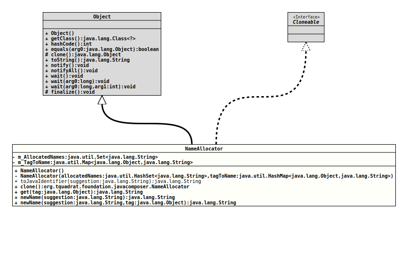

Class NameAllocator
- All Implemented Interfaces:
Cloneable
Assigns Java identifier names to avoid collisions, 'abuse' of keywords, and invalid characters. To use it, first create an instance of this class and allocate all of the names that are needed. Typically this is a mix of user-supplied names and constants:
NameAllocator nameAllocator = new NameAllocator();
for( final var property : properties )
{
nameAllocator.newName( property.name(), property );
}
nameAllocator.newName( "sb", "string builder" );Pass a unique tag object to each allocation. The tag scopes the name,
and can be used to look up the allocated name later. Typically the tag is
the object that is being named. In the above example we use
property for the user-supplied property names, and
"string builder" for our constant string builder.
Once we've allocated names we can use them when generating code:
MethodSpec.Builder builder = MethodSpec.methodBuilder( "toString" )
.addAnnotation( Override.class )
.addModifiers( Modifier.PUBLIC )
.returns( String.class );
builder.addStatement( "$1T $2N = new $1T()", StringBuilder.class, nameAllocator.get( "string builder" ) );
for( var property : properties )
{
builder.addStatement( "$N.append( $N )", nameAllocator.get( "string builder" ), nameAllocator.get( property ) );
}
builder.addStatement( "return $N", nameAllocator.get( "string builder" ) );
return builder.build();The above code generates unique names if presented with conflicts. Given
user-supplied properties with names ab and sb this
generates the following code:
@Override
public String toString()
{
StringBuilder sb_ = new StringBuilder();
sb_.append( ab );
sb_.append( sb );
return sb_.toString();
}The underscore is appended to sb to avoid conflicting with the
user-supplied sb property. Underscores are also prefixed for names
that start with a digit, and used to replace name-unsafe characters like
space or dash.
When dealing with multiple independent inner scopes, use a
clone()
of the NameAllocator used for the outer scope to further refine
name allocation for a specific inner scope.
- Author:
- Square,Inc.
- Modified by:
- Thomas Thrien (thomas.thrien@tquadrat.org)
- Version:
- $Id: NameAllocator.java 1067 2023-09-28 21:09:15Z tquadrat $
- Since:
- 0.0.5
- UML Diagram
-

UML Diagram for "org.tquadrat.foundation.javacomposer.NameAllocator"
{kind=link}
-
Field Summary
FieldsModifier and TypeFieldDescriptionThe allocated names.The registry for the names. -
Constructor Summary
ConstructorsModifierConstructorDescriptionCreates a newNameAllocatorinstance.privateCreates a newNameAllocatorinstance. -
Method Summary
Modifier and TypeMethodDescriptionfinal NameAllocatorclone()Creates a deep copy of thisNameAllocator.final StringRetrieves a name that was previously created withnewName(String, Object).final StringReturns a new name using the given suggestion that will not be a Java keyword or clash with other names.final StringReturns a new name based on the given suggestion that will not be a Java keyword or clash with other names.static final StringtoJavaIdentifier(String suggestion) Translates the given suggestion for an identifier to a valid Java identifier by replacing invalid characters by an underscore ("_").
-
Field Details
-
m_AllocatedNames
The allocated names. -
m_TagToName
The registry for the names.
-
-
Constructor Details
-
NameAllocator
public NameAllocator()Creates a newNameAllocatorinstance. -
NameAllocator
Creates a newNameAllocatorinstance.- Parameters:
allocatedNames- The allocated names.tagToName- The registry for names.
-
-
Method Details
-
toJavaIdentifier
Translates the given suggestion for an identifier to a valid Java identifier by replacing invalid characters by an underscore ("_"). If thesuggestionstarts with a character that is not allowed to start a Java identifier, but is otherwise valid, the resulting identifier is prepended by an underscore.- Parameters:
suggestion- The suggestion for an identifier.- Returns:
- A valid Java identifier.
-
clone
Creates a deep copy of thisNameAllocator. Useful to create multiple independent refinements of aNameAllocatorto be used in the respective definition of multiples, independently-scoped, inner code blocks. -
get
Retrieves a name that was previously created withnewName(String, Object).- Parameters:
tag- The identifier for the name.- Returns:
- The name.
- Throws:
ValidationException- The tag was unknown.
-
newName
Returns a new name using the given suggestion that will not be a Java keyword or clash with other names.- Parameters:
suggestion- The suggestion.- Returns:
- The new name.
-
newName
Returns a new name based on the given suggestion that will not be a Java keyword or clash with other names. The returned value can be queried multiple times by passing the given tag toget(Object).- Parameters:
suggestion- The suggestion for the new name.tag- The tag for the new name.- Returns:
- The new name.
-